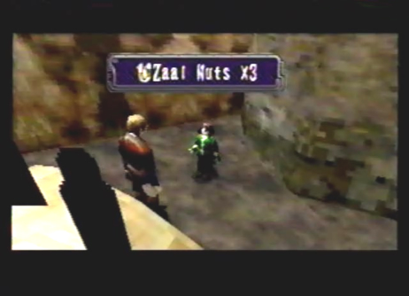

Diary Entry 19: Village of Zoah Visit 2 A District of Holy Men After saving Enkak's Life, I decided to return to camp to get some much needed rest. To my surprise, Paet was there waiting for me. I told him that I had failed to get into the Tower. He said it was great news! Great news!? It was then and there I believed he had gone completely crazy! He happily explained to me, that he had found a way to fly to the Tower. An ancient ship called Mel-Kava protects it by creating fog. Also called "God's Carriage." Supposedly it fought in a huge battle ages ago, over the Tower. If the ship were to be destroyed, so would the fog, revealing the way. Paet told me to find some more information at the Village of Zoah, in a place called the Holy District. Before departing for the Village of Zoah, I went to the Excavation Site, to pay my respects to my deceased Captain. When I arrived, I found the horrible sight of Radgam's lifeless body. His back had been broken and his blood drained from his body! Most likely by monsters. He died a hunters death. I took his unloaded Large Gun with me and left for the Village of Zoah. When I got there, I quickly hid myself from view. The Empire had occupied the town while I was gone, and soon it would be overtaken by their greedy hands. After listening in on their conversation, they soon departed and the light of day had turned into the darkness of night. During the night, I thought I'd go return the Large Gun to it's rightful place, on the pedestal in Radgam's house. I found two Recovers in his toolbox. Thinking things through, I decided to keep the Large Gun, to show as proof that he had indeed left this world. Towards the back of town, I saw a bright light coming from Aldo's house. Inside, I found some Lamp oil from an old lamp on the floor and a Shield Chip under a sheet near his ladder. I also stumbled upon a back room wherein, I found Aldo himself, hiding from the Empire. I showed him Radgam's gun and told him I had found it in the valley, next to his dead body. His eyes had a sad distant look, the kind of look when you've lost someone you respect. I noticed he had a Dual Blast Chip inside his toolbox. He told me he wouldn't be needing it, and let me keep it. As we talked the night away, he explained to me that he was once a part of Radgam's hunting crew. His friends were all brutally murdered by monsters, leaving him and Radgam as the only survivors. It was then that he, as well as Radgam escaped to this town to make an easy living far away from the retched monsters that had killed their friends. Radgam never gave up his hunting ways, and was a hunter right up to the moment he died. I told him it was the right thing to do. The next day, I ran into Abner. He angrily gave me a pass to the Holy District, saying that I hadn't earned it. He told me about a man named Vaiman, who was second in command to the High Priest and was also Paets father. He wanted to see me. His house was behind the church, in the Holy District. I proceeded to make my way into the Holy District. To the left of the Liberal District entrance, I found a Zoah Harvest near some edible hanging plants. Straight ahead was a grain storehouse. To the left of the storehouse, I found a recover among a bush of Hammond fruit. To its right, I found another Zoah Harvest. I entered the storehouse and met a man named Boaz. He told me to get out, but I showed him my pass. He ranted on about how he believed trade with the outside world, only brings trouble. Next, I entered the church to the far left of the storehouse. I met Damon, the High Priest. He told me to leave as soon as my business was finished, not a very welcoming man. Moving on toward the back of the church, I met the grain seller I had seen when I first visited Zoah. His name was Quitor. Upon talking to him, he gave me 200 Dynes. It was just a bribe to keep my mouth shut, since I had seen him commencing in trade with outsiders, but I happily took it. After repeatedly talking to him, he offered to sell me Zaal Nuts for 500 Dynes. I took him up on his offer. These nuts were valuable and could catch a high price at any shop. Talking to Quitor yet again for a long period of time, caused him to notice my Macran Jewel I had received from the Kolbas at Uru. He offered to buy it from me for 9000 Dynes. I turned him down, it was worth more than that. His next offer was 10000 Dynes. I graciously excepted since I had another one anyway. He was very grateful, since you couldn't find them around here. Behind Quitor, I found a little girl. When I tried to talk to her, she ran away and hid herself. It wasn't too hard to find her hiding spot and when I did, she warmed up to me. She said her mother told her outsiders like myself don't have any food and gave me some more Zaal Nuts. It was nice of her to do such a thing, but also insulting at the same time. She also gave me a mysterious item called an Aronak Unit. What a nice little girl she was. Inside the fire pit where she hid behind, I found a book called Bible 1. I knew only Paet would try to burn a thing like this. Next, I finally made it over to Vaiman's estate. When I entered his room, Paet gave me a warning to be careful of his political father. He then stormed out of the room. After a long conversation, the short chubby man persuaded me to fight the Empire, and protect the town from their filthy hands in the process. He said the Imperial Fleet was stationed at an air force post northwest of Uru. He was thrilled that I had agreed to help him out and upon leaving, he gave me 1500 Dynes to keep our little conversation a secret. I left Vaiman and returned to the Liberal District. Abner approached me, telling me he couldn't pay me back the 100 Dynes he had previously borrowed. I knew this would happen! On the positive side he said I could take anything from his house I wanted, during the night. I then entered Jared's shop and decided that I'd sell Radgam's Large Gun to him. I received a hefty sum of 1500 Dynes. Soon after, I made sure to sell my useless items to him, and stalk up on healing items. The day was coming to an end once more, as I made my way towards the end of town to see Paet. He was surprised I was really going to take the job that his father had given me. But it was something I had to do. He said I could stop by his house at night. I couldn't pass up the offer to see the great inventors room, so I agreed. Night soon fell upon the town. I thought I'd go see how old Juba was doing. Upstairs, I found a seeker named Jephthah. He gave me a Tower Report. I wondered where he got such a thing? As I continued to talk to him some more, he offered to sell me a Tri-Burst gun part he had recovered from some nearby ruins. 1000 Dynes was too much, so I pleaded with him to lower the price to 800 Dynes. I actually got him to sell it to me for that price and got a real bargain! He wasn't too happy though, realizing what he had just done. After visiting Juba's bar, I remembered Abner told me I could take anything I wanted from his house during the night, so I entered his house. To the right of the door, I found a pile of junk! The best thing I could find was a book on the dragon, called Dragon Book 2. I hastily left, realizing I still had to go see Paet before the night was through. I ran myself over to the Holy District and down an alley, to the left of Vaiman's estate. I noticed a ladder leading up into a dimly lit window. It was Paet's room! He let down the ladder and I climbed up as fast as I could. His room was amazing, full of all kinds of ancient gadgets. When examining his bookshelf, he said I could have a book I had my eye on, called Dragon Book 3. Before leaving, Paet told me he had sealed off the stairs to keep his father out. He continued to say that if his father truly had to defend the town on his own, he would desert it like a true coward. Not a good son and father relationship, if you ask me. I thanked him for the book and finally left Zoah. Before heading off to the Imperial Air Force Post, I went to see Raul at the caravan. To my amazement, he gave me a Base Manual, depicting the Imperial Air Force Post's weakness. The inner walls surrounding the Control Tower remain closed. These walls only open while taking in supplies or during a Red Alert to allow reinforcements to attack. This would be my opportunity to advance to the Control Tower and completely take it out. Thanks to Raul, with this vital knowledge, I left for the Imperial Air Force Post to give the Empire Hell! |
|
| Divine
Overview |
1. Go to camp. Paet is there waiting for you. He will give you information about an ancient ship called Mel-Kava. It's guarding the Tower, by creating fog. He tells you to go to the Holy District in the Village of Zoah, to find out more. |
2. Before going to the Holy District in the Village of Zoah, go back to the Excavation Site. You will find Radgam's lifeless body, as well as his unloaded, Large Gun. His back has been broken, and his blood has been drained from his body by monsters. What a fitting way to go. |
3. Upon returning to Zoah, you will find that the Empire has occupied the town, and will soon take it for themselves. |
4. After the cut-scene with the Empire, it will be nighttime. Go over to Radgam's abandoned home and take Recover X 2 from his toolbox. |
5. Next, go inside Aldo's house towards the back of town. Second, examine the lamp on the floor to receive Lamp Oil X 1. Third, examine the sheet next to the ladder, to receive Shield Chip X 1. Last, enter into a back room, to find Aldo hiding out. Examine his toolbox and he'll give you a Dual Blast Chip X 1. After talking to him for a while, you have to answer a yes or no question. If you pick no, Aldo will become angry and you will have to apologise. |
6. The next day, Abner the night gatekeeper will give you a pass that allows you to enter the Holy District. |
7. Go right ahead and enter the Holy District. |
8. Eavesdrop on the mother and daughter, to the far right of the storehouse. Make sure to lock-on to them when you are far away, to hear their conversation. |
9. Once inside the Holy District, you can find a Zoah Harvest X 1 among the edible plants, to the left of the entrance to the Liberal District. |
10. To the left of the storehouse, you'll find a bunch of Hammond fruit. Among the fruit is a Recover X 1. |
11. To the right of the storehouse, you'll find yet another Zoah Harvest X 1. |
12. Enter the storehouse. |
13. Within the storehouse, is enough food to feed all the citizens of the Holy District. You'll also meet Boaz, the keeper of the storehouse. He strongly believes that trade with the outside world only leads to trouble. |
14. Enter the church to the left of the storehouse. |
15. Inside you'll find the High Priest Damon, bickering about how the gods have abandoned the people. |
16. Go behind the church, and you'll find a man named Quitor. First, talk to him and he'll give you 200 Dynes, what a nice guy! Second, talk to him repeatedly until he asks you if you want to buy some Zaal Nuts from him. Buy them for 500 Dynes, and you can sell them to a shop later on for 1500 Dynes. Third, talk to him repeatedly again, until he asks if he can buy the Macran Jewel you received from fighting the Kolbas, at Uru. He will offer you 9000 Dynes at first. Choose the option, do not sell. He will then offer you 10000 Dynes, except this offer and 10000 Dynes will be in your pocket, minus one Macran Jewel. Last, talk to his daughter Rhoda, who can be found directly behind him. She will run away and hide. |
17. She's not too hard to find. Can you spot her? |
 18. Talk to her repeatedly and she'll say outsiders like Edge, don't have any food. She will then give you Zaal Nuts X 3. |
19. If you have a save file of Panzer Dragoon 2 Zwei on your Saturn's internal memory, she'll give you the Aronak Unit X 1. |
20. While at camp, examine the mysterious unit. The Aronak Unit pays homage to Panzer Dragoon 2 Zwei, by showing holograms of two different dragon forms, as well as playing two music tracks from that game. |
21. Inside the fire pit that Rhoda is behind, you will find Bible 1 X 1. |
22. It's time to enter Vaiman's house. |
23. Once inside, Vaiman persuades Edge to fight the Empire, as the sole protector of the town. |
24. Leave the Holy District and return to the Liberal District. Talk to Abner. He will tell you that he can't pay back the money he borrowed, but will allow you to take anything from his house during the night, that is to your liking. |
25. You can sell the Large Gun you received from Radgam's dead body to Jared, who will take it off your hands for a hefty sum of 1500 Dynes. I highly recommend selling it to him. When you run into him later on in the game, something good might happen. |
26. The last thing you can do during the day, is talk to Paet. He will ask you to come to his house when you have time. He also tells you he's usually at his house during the night. |
27. Turn day into night. |
28. Go to Juba's bar. Upstairs you will find Jephthah the seeker. first, talk to him and he will give you the Tower Report X 1. Second, talk to him repeatedly until he asks you if you want to buy a Tri-burst gun part. Don't settle for 1000 Dynes. Ask him to deal more. Third, he will lower the price to 800 Dynes. Except this offer. Last, he will finally give you a Tri-burst X 1. Before you leave, also notice that Jael will have arranged for you to get a discount on the drinks you order from Juba, as thanks for giving her the Verato Pipe. Instead of paying 20 Dynes you now only have to pay 10 Dynes. |
29. Go over to Abner's house and claim your prize or junk! Examine the junk pile to the right of the door. You can choose between three options. The first option will allow you to take Shield Chip X 2. The second option will allow you to take Dragon Book 2 X 1. The third option will allow you to take Olfactory Lobe X 1. The best option to take, is the third. Dragon Book 2 continues the epic tale of Lundi, from Panzer Dragoon 2 Zwei. It's a must read! |
30. Before you leave the Village of Zoah, head back over to the Holy District and take Paet up on his offer to let you see his room. First, to the left of Viaman's house, is an alley. Second, run down to the end of the alley and examine the latter above, to have Paet drop it down. Third, have a conversation with Paet. Last, examine his book shelf and he will give you Dragon Book 3 X 1, the final dragon book. |
31. Leave the Village of Zoah and head to the caravan. Raul will give you a Base Manual X 1, that reveals the weakness of the Empire's Imperial Air Force Post. With this secret information in mind, head on over there and give the Empire Hell! |